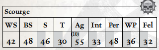

天灾在阴谋团高耸的尖塔、巫灵竞技场综合体与血伶人潮湿的地牢之间穿梭飞翔，他们遍览黑暗灵族社会的全貌，并轻蔑地翱翔于这一切之上。每一位天灾都经历过痛苦之极的增强与改造手术——将巨大的翅膀移植于肩头，以合成肌肉与肾上腺素分配器增强其血肉，并掏空骨骼，使每一位天灾都能真正地飞行。即便经历了这些严酷的改造，天灾的晋升仍未完成——因为新转化的黑暗灵族必须凭鲜血浸染的、尚未愈合的翅膀飞向其新同族的鹰巢，在滑板暴徒帮派的险境与劫掠者及剃刀翼的高速追猎中幸存。唯有完成这场垂直的朝圣之旅，他们才能真正被称为天灾。
天灾为权贵担任信使，携带着以毒液密封的信函。收信人拥有唯一能解毒并打开信函的方法。这一角色赋予天灾极大的自由与权力——因为杀害正在执行任务的天灾，将招致最具创意与最痛苦的死亡惩罚。在战斗中，天灾偏好远程武器，不愿将脆弱的改造身体置于近战之怒中；一队天灾能迅速从意想不到的角度将火力投射至敌人。强大的执政官与魅魔的庇护使天灾能够负担一些最致命、最异种的武器——从剧毒碎片卡宾枪，到凶残的粉碎者、致命的冲击枪，乃至混乱冲击枪与热光矛。

移动（步行）： 5/10/15/30 承伤： 10
移动（飞行）： 12/24/36/72
护甲： 幽魂板甲（全身6，防护等级20）。 总坚韧加值：3
技能： 杂技（Ag）+10，警觉（Per）+20，通用学识（黑暗灵族）（Int）+10，闪避（Ag）+10，恐吓（S）+10，无声移动（Ag）+10，巧手（Ag）。
天赋： Bulging Biceps，猫落地，黑暗灵魂，死眼射击，困难目标，强化感官（听觉、视觉），腰射，阴谋团武器训练，闪电反射，Mighty Shot，怜悯弱者，冲刺。
特性： 黑暗视觉，飞行（12），痛苦即力量，超自然敏捷（x2）。
武器： 碎片卡宾枪（基础；60m；S/3/5；1d10+4 R；穿甲3；弹匣200；装填2整轮；风暴，毒素），单分子刀（近战；1d5+4 R；穿甲2），3枚灵族等离子手雷（投掷；12m；1d10+8 E；穿甲4；爆炸（3），震击）。
装备： 各类可怖战利品，2个碎片卡宾枪弹匣。